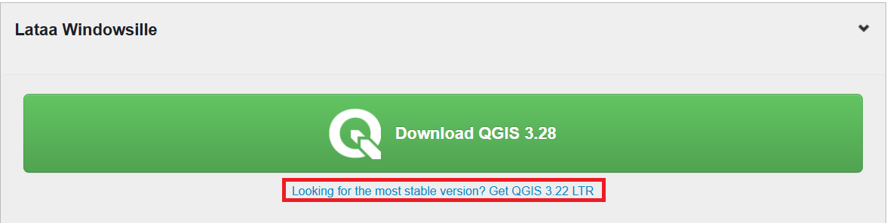

Harjoitus 1: Koulutusympäristön valmistaminen
Harjoituksen sisältö
Harjoituksessa ladataan QGIS ja tallennetaan kurssimateriaalit käytettävälle tietokoneelle.
Harjoituksen tavoite
Harjoituksen jälkeen koulutettava osaa asentaa QGISin ja tietää oman kurssihakemistonsa sijainnin.
Arvioitu kesto
10 minuuttia.
Valmistautuminen Avaa web-selain ja mene QGISin suomenkielisille verkkosivuille:
QGISin lataus ja asennus
Löydät QGISin verkkosivujen etusivulta linkin, jonka avulla pääset lataamaan QGIS-työpöytäohjelmiston. Lataa sivustolta viimeisin QGIS LTR (long term release eli pitkäaikaisversio). Pitkäaikaisversio sopii parhaiten ammattikäyttöön, sillä se on vakain QGIS-versio – siitä voi kuitenkin puuttua joitakin uudempien versioiden ominaisuuksia. QGISin voi asentaa Windows-, Linux- tai Mac-käyttöjärjestelmään. Eri järjestelmien QGIS-versioiden välillä huomattavimmat erot ovat väriskeemoissa ja tiedostopoluissa – muuten erot ovat hyvin pieniä. 
Avaa tietokoneeltasi sijainti, jonne asennuspaketti latautui ja tuplaklikkaa asennuspaketin kuvaketta asentaaksesi QGIS-paketin tietokoneellesi. Kun asennus on suoritettu, kurkista työpöydälle ilmestyneeseen QGIS 3.34 -kansioon ja tarkastele sieltä löytyviä pikakuvakkeita.

QGISin perusasennuspaketin mukana tietokoneellesi asennetaan QGIS Desktop -perusohjelmiston lisäksi mm. QGIS Desktop with GRASS. Nämä QGISin perusversion mukana tulevat ohjelmistot tuovat QGISin käyttöön lisää erilaisia prosessointi- ja analysointityökaluja.
Kurssimateriaalien lataus
Kurssilla tarvittavat paikkatieto-aineistot on ladattavissa Google Drivestä linkistä
Avaa yllä oleva linkki ja klikkaa Lataa. Tämä lataa aineistot kokonaisuudessaan pakattuna zip-tiedostona Kurssihakemisto.zip. Pura kurssimateriaalit omalle tietokoneellesi haluamaasi kansioon niin, että löydät ne helposti harjoituksia tehdessä. Kun kurssimateriaalissa viitataan ../kurssihakemisto/, tarkoitetaan itse määrittelemääsi kurssihakemiston polkua. Kysy tarvittaessa apua kouluttajalta.